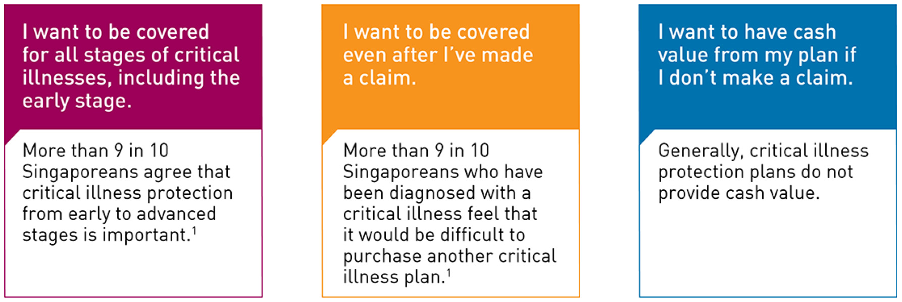

<!--
@license
Copyright (c) 2016 The Polymer Project Authors. All rights reserved.
This code may only be used under the BSD style license found at http://polymer.github.io/LICENSE.txt
The complete set of authors may be found at http://polymer.github.io/AUTHORS.txt
The complete set of contributors may be found at http://polymer.github.io/CONTRIBUTORS.txt
Code distributed by Google as part of the polymer project is also
subject to an additional IP rights grant found at http://polymer.github.io/PATENTS.txt
-->

<link rel="import" href="../bower_components/polymer/polymer.html">
<link rel="import" href="../bower_components/paper-button/paper-button.html">

<dom-module id="my-view2">

  <template>

    <style>
      :host {
        height: 100%;
        display: block;
        --footer-color: #DDDDDD;
        --container-color: #333333;
        --app-bright-color: #ffffff;
        --app-p1-color: #D31145;
        --app-p2-color: #596C80;
      }

      footer {
        background-color: var(--footer-color);
        padding: 12px 24px;
        font-size: 0.6rem;
        position: fixed;
        bottom: 0px;
        width: 100%;
      }
      footer p {
        margin: 0px;
      }

      .div-container {
        background-color: #fff;
        color: var(--container-color);
      }
      .ul-title-container, .ul-info-container, .ul-option-container {
        width: 100%;
        padding: 26px 22px 0px 48px;
        list-style: none;
      }
      .ul-title-container li, .ul-info-container li, .ul-option-container li {
        float: left;
      }
      .ul-title-container p {
        text-transform: uppercase;
        font-size: 1.5rem;
        margin: 0px;
        padding: 0px;
      }
      .ul-title-container paper-button {
        background-color: var(--app-p1-color);
        color: var(--app-bright-color);
        cursor: pointer;
        border-radius: 0px;
        font-size: 0.8rem;
        right: 22px;
        padding: 6px 60px;
        position: absolute;
        margin-top: 5px;
      }
      .div-content {
        width: 100%;
        height: 100%;
        text-align: center;
        margin-top: 50px;
      }
      .div-content img {
        width: 890px;
      }
    </style>

    <!-- Container  -->
    <div class="div-container">
      <ul class="ul-title-container">
        <li class="li-left"></li>
        <li class="li-right"><paper-button>NEXT</paper-button></li>
      </ul>
      <br/>
      <div class="div-content">
        
      </div>
    </div>

    <!-- Footer  -->
    <footer>
      <p>
        Source: 1.AIA Health Matters Survey 2016 <br/>
        <b>Note:</b> This is for illustration purpose only.
      </p>
    </footer>

  </template>

  <!-- Script  -->
  <script>

    Polymer({

      is: 'my-view2'

    });

  </script>

</dom-module>
